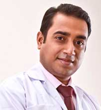
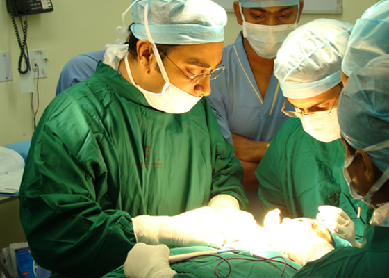

Srijon Mukherji - FDSRCS Eng, FIBOMS
Chief Surgeon | Director
Calcutta Institute of Maxillofacial Surgery & Research
Graduated in 1997 from the University of Calcutta as a Bachelor of Dental Surgery, Dr Mukherji was the first person in the history of this university to take and clear the first part of the Fellowship Exam of the Royal College of Physicians and Surgeons of Glasgow while still an intern at Dr R Ahmed Dental College, Kolkata in 1998 . However, before this, during the college years a few of the awards and distinctions to mention were:
-
Merit Award-International College of Dentists (India Section) 1997
-
Merit Award-Indian Society of Periodontology & Colgate Palmolive India Ltd. 1997
-
Honours in General Surgery
Indian Dental Association Awards
-
Dr Swarup Mohan Roy Memorial Gold Medal (for overall highest marks in the BDS batch 1993-97)
-
Hira Charan Pal Memorial Gold Medal 1997
-
Bela Sarkar Memorial Gold Medal 1997
-
Dr R Ahmed Memorial Gold Medal 1997 (for highest aggregate marks in Final Professional BDS Exam)
-
Vivek Memorial Gold Medal 1996
-
Dr Bankim Mukherjee Memorial Gold Medal 1996 (for highest aggregate marks in Third Professional BDS Exam)
- Order of Merit , University of Calcutta 1996 and 1997
July 1998 he reached London , UK and started training in Maxillofacial Surgery at The Royal London Hospital as a House Officer. Other hospitals he worked in were Charing Cross Hospital, Fulham Palace Road, London W6 8RF, Hammersmith Hospital, 369 Du Cane Road, London W12 0HS; West Middlesex University Hospital, Twickenham Road, Isleworth, Middlesex TW7 6AF; Chelsea & Westminster Hospital , Fulham Road, London SW10 9NH; University College Hospitals, London, Mortimer Market, London WC1E 6AU, Eastman Dental Hospital, 256 Gray's Inn Road, London WC1X 8LD, Great Ormond Street Hospital for Children, Great Ormond Street, London WC1N 3JH, Royal Free Hospital, Pond Street, London NW3 2QG, Mount Vernon Hospital, Rickmansworth Road, Northwood, Middlesex HA6 2RN, Watford General Hospital, Vicarage Road, Hertfordshire WD18 0HB, Hillingdon Hospital, Field End Road, Uxbridge, Middlesex UB8 3NN.
Dr Mukherji completed FDS RCS of England with majors in Oral Medicine and Oral & Maxillofacial Surgery in August 2000 and continued higher surgical training in the UK till 2002.
Specialty training courses, he attended in the UK included:
-
Head & Neck Trauma Course-September'98 Kings College Hospital , London
-
Facial Bone Plating Workshop (AO System)-March'99 The Royal London Hospital, London
-
Human Disease (Medicine in Dentistry) Course-June'00 Guy's Hospital, London
-
Core of Knowledge-Ionizing Radiation Protection - June'00 Luton & Dunstable Hospital , Bedfordshire
-
Royal College of Surgeons of England-Microvascular Surgery Workshop-April'01 Northwick Park Hospital, London
-
Surgical & Restorative Dental Implantology Course-September'01 Hotel Hilton, Leeds
-
National Course in Conscious Sedation-November '01 53 Wimpole Street (Society Head Office), London
-
Higher Surgical Trainee Skills Course in Maxillofacial Surgery-April'02 Royal College of Surgeons of England , London
-
Facial Skin Surgery and Plastic Techniques Workshop-May'02 Queen Victoria Hospital , East Grinstead , Sussex
-
Advanced Cardiac Life Support Providers Course-April'02 Charing Cross Hospital, London.
Returned to India in 2002, his first effort was to apply to the Government of West Bengal for an honorary surgeon's position in any of the Calcutta teaching hospitals as the service in this subject here remains all but satisfactory and adequate. For unknown reasons however, this could never be achieved after long delays and deliberations. So, in October 2002 he joined as the sole Consultant Maxillofacial Surgeon to Apollo Gleneagles Hospitals, Kolkata. There he also acted as the head of the Department of Dental Surgery. His responsibilities were:
- Comprehensive management of extended spectrum
- Head-neck-face trauma
- Primary provider of tracheostomy services for a 350 bed multispeciality hospital
- Comprehensive surgical management of Oral and other head-neck cancer
- Providing diagnostic, conservative and surgical treatment for jaw joints, salivary glands and neck pathologies
- Corrective surgery for hard and soft tissue facial deformities including Cleft lip and palate repair - primary, secondary and Orthognathic surgery
- Full range Aesthetic facial surgery including rhinoplasty
- Comprehensive management of all oral lesions of dental and non-dental origin and provision of surgical dentistry for medically compromised patients or in technically difficult situations
- Providing an oral diseases diagnostic service and conducting the clinical administration of a premiere multispeciality dental set-up
- Here Dr Mukherji successfully performed more than 800 maxillofacial surgeries under General Anaesthesia which included more than 100 head-neck cancers and nearly 300 extensive facial injuries . Some of the surgery patients are featured in this website. 
- In 2007 Dr Srijon Mukherji was awarded Glory of India by IIFS New Delhi .
- Since January 2007 he has also been a Visiting Faculty to Tripura Medical College , Agartala, Tripura.
- In February 2009, Dr Mukherji joined Haldia Institute of Dental sciences & Research. In 2011 he became a Reader in the faculty of Oral & Maxillofacial Surgery.
His presentations & publications include:
- A Percentage Analysis of �Zygomatic Fractures'Types, Aetiology and Primary Management - The Royal London Hospital , Grand Round, Aug'99
- Audit Project (Based on Day Care GA list) : Subjective Complaints of Wisdom Tooth Surgery - Watford General Hospital , Grand Round, May'00
- Medical Emergencies in Dental Practice - 2 nd Annual Conference of Indian Dental Association (Howrah Dist.), Nov'03
- Medical Emergencies in Dental Practice - 39 th State Conference of Indian Dental Association ( West Bengal ), Dec'03
- Medical Emergencies in Dental Practice - 5 th Annual Conference of Indian Dental Association ( North Bengal Br. ), Dec'03
- Comprehensive Management of Facial Trauma - 40 th State Conference of Indian Dental Association (WB). Town Hall � Kolkata, Dec'04
- Two Years of Maxillofacial Surgery Practice at a Single Hospital in Kolkata RKM Seva Pratishtan
- An Interactive Session with our colleagues from Bangladesh , Mar'05
- Association of Oral & Maxillofacial Surgeons of India , West Bengal Chapter
- Adult Basic Life Support Workshop for Dentists (Trainer)
- North Bengal Dental College , Darjeeling , Sept'05
- Visor's Approach to The Fractured Mandible
- 36 th National Conference of Association of Oral & Maxillofacial Surgeons of India - Jaipur, Nov'05
- Expanding Horizon of Maxillofacial Surgery - 6 th State Conference of Indian Dental Association, Tripura State Branch, Agartala, Jan'06
- Expanding Horizon of Maxillofacial Surgery - Annual Conference of Coalfield Dental Association, Ranigunj, Jul'06
- Maxillofacial Surgery � The Indian Experience - Royal London Hospital , London , UK
- Surgical Management of Skull Base Cancer - State Conference of Indian Association of Radiation Oncologists, Agartala, Tripura, Nov'07
- Cysticercus-An Unusual Reason for Trismus , Published in Journal of Maxillofacial & Oral surgery (ISSN 0972-8279) June 2006
- Adult Basic Life Support & Emergencies in Dental Practice – Workshop (faculty)
- Pediatric Maxillofacial Surgery
- Management of Fractures of Zygomatico-orbital Complex (faculty)
- Frontal Sinus Fractures (faculty)
- Salivary Gland tumours: Not Just Parotid Pleo! (faculty)
- Debate: "Prophylactic Neck Dissection in N0 neck for oral cancer should be done." (faculty)
- Submental Intubation: an alternative and cost-effective technique for complex Maxillofacial Surgery, Published in Journal of Maxillofacial & Oral surgery (ISSN 0972-8279) Dec 2010
- Management of Bilateral Wathin’s Tumour of Parotid: A Case Report & Review of Literature, Accepted in Oct’10 Journal of Maxillofacial & Oral surgery
- Surgical Management of Congenital Musculoskeletal Torticollis: A Case Report & Review of Literature, Submitted Dec’10 Journal of Maxillofacial & Oral surgery
Amongst others-Specialty Training Courses in India :
- Aesthetic Facial Surgery Workshop-December'03 29 th Annual Conference of AOMSI, Mangalore, Karnataka
- Aesthetic Facial Surgery (spl. interest Rhinoplasty) Workshop-November'04 30 th Annual Conference of AOMSI, Nagpur , Maharashtra
- Rhinoplasty Workshop by NA Nasser February 2007 GSR Institute of Craniofacial & Facial Plastic Surgery, Hyadrabad
- Comprehensive Head & Neck Oncology Teaching Programme - February 2009
Memberships
- Royal College of Surgeons of England
- International Association of Oral & Maxillofacial Surgeons
- Association of Oral & Maxillofacial Surgeons of India Executive Committee Member since 2009, Joint Secretary for 2010-11
- International Trauma Anaesthesia & Critical Care Society
- Foundation of Head & Neck Oncology, India
- Indian Board of Oral & Maxillofacial Surgery
- National Faculty for Cranio Maxillofacial Surgery, AO Switzerland
Present Spectrum of Surgery
Comprehensive management of extended spectrum head-neck-face trauma including orbit and soft tissue injuries (500+)
Tracheostomy (100+)
Comprehensive surgical management of oral and other head-neck cancer and skull base tumours (350+)
Providing diagnostic, conservative and surgical treatment for jaw joints, salivary glands and jaw and neck pathologies (500+)
Corrective surgery for hard and soft tissue facial deformities including Cleft lip and palate repair - primary, secondary and orthognathic surgery (170+)
Full range Aesthetic facial surgery including Rhinoplasty (150+)
Comprehensive management of all oral lesions of dental and non-dental origin and provision of surgical dentistry for medically compromised patients or in technically difficult situations (1000+)
Management of Cervicofacial infections.
Providing an oral diseases diagnostic service and conducting the clinical administration of premiere multispeciality dental and Maxillofacial set-ups
Logbook count (GA Surgeries) just under 2500 in July 2011, This only includes the Indian experience as Consultant Surgeon and not the 2000+ cases at different levels as a surgical trainee in England.
In 2008 CIMS was born….
In 2011 Dr Mukherji Joined Fortis Hospitals at their launch in Kolkata…
Released from Apollo Responsibilities in May 2011 apart from special surgical charters.
Contact details
direct: drmukherji@rediffmail.com
Thru Secretary: +91 9830080174